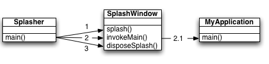

{kind=link}
| Copyright © Werner Randelshofer. All Rights Reserved. |
Notice: This article has become obsolete with the new SplashScreen API that has been added to Java SE 6.
There are many articles about doing Splash Screens in Java. Not all of them take performance seriously. This one does.
A splash screen is an image being shown on screen while an application is starting up. This article discusses how to create a splash screen that is shown very early in the process of starting a Java application. To achieve this we minimize the number of API classes needed to display the splash screen and we carefully avoid resource contention by the threads running in the JVM.
Java applications often have very long initialization times. I am assuming, that we have already tried our best to reduce the start up latency of our application. But sometimes we reach a hard limit that we cannot undercut. It takes a while until our application is ready, and there is nothing we can do about it.
A splash screen is a means to provide feedback to the user, telling that our application is starting up, and it also is a way to advertise our product.
At first glance, implementing a splash screen seems to be straightforward. The Swing API provides a rich set of classes to do this. Simply create a JWindow, put a JLabel with an ImageIcon on it, put the current Thread to sleep for 3 seconds and then continue loading the application...
Unfortunately with such a naïve approach we not only end up increasing the start up latency of our application by the 3 seconds sleep time, we also happen to 'achieve' that our splash screen shows up late in the initialization process of our application. And if the splash screen shows up late, it does not fulfil its job.
When we design a splash screen we have to take account of the following:
The proposed design consists of three classes: MyApplication, Splasher and SplashWindow. The diagram below outlines the classes and their collaboration.

MyApplication is our application class. SplashWindow contains all code required to do the fast splash screen. Class Splasher is the new entry point for MyApplication. The numbers indicate the sequence of method invocations.
MyApplication is our application class. It contains the long running initialisation code. To achieve a clear design, we keep this class free from our splash screen code. The only concession that we require is, that its main method must return once the application is up and running.
Here is an outline of the code of MyApplication.java.
public class MyApplication
{ //...program code creating
a JFrame with a ‘Hello
World’ message
omitted... |
Please note that we can launch the application without a splash screen by directly invoking the main method of this class. This is useful for testing and debugging.
Now let's see how to add a splash screen to this class.
Splasher is our bootstrap class. Its purpose is to separate the splash screen code from the application class code, and to keep class SplashWindow maintenance free. Class Splasher consists of a main method only, which does three things:
Please note that we want to keep this class as small as possible. The size of this class and of the of classes referenced by this class directly influence the startup latency of our splash screen.
public class Splasher
{ |
As you can see, this class consists only of code that delegates tasks to the SplashWindow class.
In fact, we could have moved all the code of this class into class SplashWindow. Why haven't I done so? Class Splasher contains all the code that needs to be changed per application. That is, for each application we will be using another splash image, and the class name of the application will also be different. This keeps class SplashWindow free from application specific changes. It can be reused over and over again, without ever having to touch its code.
Also note, that we could have put all three method calls into a single call. But keeping each step of the initialization procedure separate, makes the procedure easier to understand.
Now lets take a look at class SplashWindow. This class and its interaction with the other two classes are the meat of this article.
I will show only the essential portions of this class, the full listing is available in the attachment.
First lets take a look at method invokeMain(). Here we invoke the main() method of our application using, er, clumsy Reflection code.
public static void invokeMain(String
className, String[] args) { new InternalError("Failed to invoke main method"); |
Today, most Java VM's lazily resolve and verify classes. At one time, on Mac OS X 10.1, we had the case of an eagerly resolving Java VM. Without using Reflection, the main method of class Splasher was only executed, after the Java VM had resolved all dependencies between the Splasher class and the rest of the application, including of all API's used by the application.
Reflection is a means to dynamically write code at runtime. Therefore, the dependency between our splash screen code and the application code will only be revealed to the Java VM, when the Class.forName() method is executed. Since class Splasher invokes method invokeMain() after it has invoked method splash(), the splash screen will be shown to the user, before such a resolution process can take place.
Reflection does not prevent though, that the Java VM loads all files of a JAR file and of dependent JAR files into memory before executing our code. If JAR file loading is a restricting performance factor (e.g. because we load them over a slow network connection), we may want to put the Splasher class and the SplashWindow together with the splash image into a separate JAR file. In the manifest of the JAR file, we do not specify a dependency to the application JAR files. Instead, we change the invokeMain() method, to have it use an URLClassLoader to load the JAR files containing the application.
Now, lets tackle method splash().
public static void splash(URL
imageURL) {
if (!
EventQueue.isDispatchThread() synchronized (instance) { instance.wait(); } catch (InterruptedException
e) {} |
You may have noticed, that there are two splash methods: one that creates the image from the URL, and one that works with the SplashWindow instance. This is just because I like to keep methods short and simple.
In the first splash() method we use the AWT Toolkit class to create the image. We use this method instead of the new Image IO API, because it does not immediately load the image using the current thread. We will initiate image loading in the AWT Event Dispatcher thread later. I will come back to this topic further below in this article.
In the second splash() method, you see that an instance of the SplashWindow is created (class SplashWindow is a subclass of java.awt.Window). Then, the instance is shown. And then, we wait in a synchronized block until the paint method of the instance has been called.
The last two steps are worth looking at closely. Showing the SplashWindow, starts the AWT Event Dispatcher thread, which is going to call the paint method of the SplashWindow. We wait in the synchronized block until the painting has happened.
Why is there an if-statement which guards the synchronized block?
We must not wait, if method splash() is called from the AWT Event Dispatcher thread. This would cause a live lock, which would hang our application. This check appears to be overkill, because we are calling this method from the Main thread anyway. I have added it, because I sometimes use the SplashWindow to display the about box of my application, and then I don't want to care on which thread I am calling this method.
The check for the number of available processors is more interesting.
On a single processor machine, if we wouldn't wait here, and instead proceed with our start up process, we would compete for the CPU with the AWT Event Dispatcher thread. Since the AWT Event Dispatcher thread has not yet started, we are likely to win the competition, or – in this case – actually hog the CPU, and therefore significantly delay the splash screen. In the worst case, the splash screen would not be shown at all.
On a multiple processor machine, we have a chance, that both threads will get a CPU of their own. In this case, we have an opportunity to maximize resource usage. Of course, it all depends on how independent the two threads are with respect to other resources they are using. Thus, on a multiprocessor machine, we take a small risk of delaying the splash screen by a little bit. In return for the risk, we get better overall performance.
The constructor of class SplashWindow makes the object ready for later usage.
public class SplashWindow extends Window
{ // ... } |
In the first of the two splash() methods, we used Toolkit.getDefault().createImage() to create the splash image. This did not actually load the image data into memory. We load it now synchronously using a MediaTracker.
Depending on the number of available processors, this is not the only thing that is going on. This is because, the Main thread may (or may not be) waiting in the synchronized block in the second of the two splash() methods.
If we are running on a single CPU machine, the processing of the image is the only task that we want to work on now. If the image is contained in the same JAR file as the other splash screen classes, the Java VM has loaded it into memory already. All we have to do, is to decode the image. The time for this task is entirely CPU bound. Any attempt to work on more than one task now, would needlessly delay the splash screen.
On a machine with more processors, the loading will happen asynchronously to the Main thread, which we have sent off to launch the application. If all files are contained in the same JAR file, we are using one CPU entirely for loading the image and leaving other resources free for the application initialization procedure.
And finally, lets take a look at the methods which are responsible for painting the splash image.
private boolean paintCalled = false;
|
The original implementation of method update() in class
Window fills its display area with a background color
before calling
the paint()
method. Since we are
drawing an image that completely covers this area, we
directly call paint(). This is done to avoid undesired flickering of the
splash image.
In method paint(), we draw the image, and after this has happened the first time, we notify the Main thread of our application. As I have described further above, on a single CPU machine, the Main thread is patiently awaiting this notification in method splash(). This strategy ensures that, on a single CPU machine, the user is granted to see the splash window.
Doing a fast splash screen, requires that we carefully manage resources, so that tasks needed for displaying the splash screen are executed prior to other tasks.
This article has shown, how to use Reflection to shift the class resolution task behind the splash screen task, and how to keep the CPU resource(s) focused on the splash screen task, until we have painted our splash image on screen.
In side tracks of this article, we have covered additional issues, such as avoiding flickering, and how to take advantage of multiprocessor machines.
The splash screen described in this article is pretty much bare bone. If you like, you can extend it to display information about start up steps to the user.
To do this, remember that we have designed class SplashWindow using the Singleton design pattern. Thus you can add more static methods to class SplashWindow, which act on the Singleton instance. These static methods can be accessed from the main method of the MyApplication class (and of any other methods involved in the start up procedure of our application).
This will have no negative impact on the class resolution and class loading issue, because the dependency is directed from the application code to the splash screen code, and not the other way round.
Java Splash Screen.pdf by Roy Ratcliffe takes a in-depth look at a number of different optimization strategies for fast splash screens. Also discusses when to use and not to use a splash screen.
A technique for presenting a Splash screen in an Applet, is to override method paint() of the Applet, and to let method init() invoke a Runnable() or a SwingWorker() on a background thread. Once the background thread finishes, it adds components to the Applet which obscure the splash screen.
I am using this technique for Applets which have a relatively small download size (less than 200 KB), but need a long time to initialize.
For a working example take a look at my RubikPlayer Applet and my VirtualCube Applets. Both applets show a copyright message during initalisation. The latter take a little bit longer to initialize, so you can see the splash screen longer.
I would like to thank Roy Ratcliffe for his valuable critique and input on both the code and this article. And, of course, for providing an excellent analysis of multi-threaded splash screens.
Special thanks go to Harry Mantheakis for the many suggestions and the through analysis of the splash screen code published in the first version of this article.
I would like to thank the Apple Java-Dev community who had an in-depth discussion about fast Splash Screens in Java.
| Copyright © Werner Randelshofer. All Rights Reserved. |